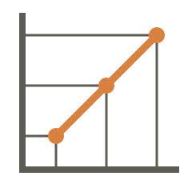

lerp
Docs
Why
v0.1.0
lerp
Docs
Why
v0.1.0
Why lerp
Running a coding agent in a terminal is something anyone can do, and for one ticket it works well.
Two at a time is still comfortable.
By the third you are not getting three times the work, and by the fifth you are naming tmux panes. Nothing says which work is claimed, nothing survives closing the laptop, and the record of what was decided lives in scrollback. Meanwhile your tracker, the tool whose entire job is who is doing what, and what happened, knows none of it.
The usual fixes are all bigger machines: a hosted agent platform, agents wired into CI, a workflow engine. Each one adds a second system of record and asks you to keep it fed.
Lerp’s bet is that the system of record you need already exists. It is your Linear board.
What a day with lerp looks like
Lerp is an operator’s TUI over that board. Your job on it is deciding what work goes in and reading what comes back.
Drop a ticket into a status a queue watches and an agent picks it up, works it, and moves it on. Big work enters at Planning, small work goes straight to Implementing, and that choice is the whole of routing. Statuses no queue serves are where work waits for a human. A finished plan parks in one until you promote it, and the promote is the approval.
The screen is built around the two questions that actually nag an operator.
- What’s blocked on me?
- Are the agents still working?
The board is the pipeline. A queue is a Linear status plus a prompt, a runner, and where to go on success. There is no DAG file. The topology is where tickets sit and where those pointers go, legible to anyone who can read the board.
Close the laptop. Lerp reconciles the board against the agent processes on your machine, so killing lerp, or the laptop dying mid-run, is drift rather than damage. Progress checkpoints at queue boundaries as artifacts in Linear, and the worst outcome is a stage that runs again.
It is you on the board, not a bot. Lerp authenticates as the operator, and claiming a ticket means assigning it to your Linear user. “Sarah has LERP-42 in Implementing” reads the same whether Sarah or Sarah’s agent is typing. No integration to install, no bot seat to explain.
Take the wheel whenever. A runner wraps a coding-agent CLI, Claude
Code, Codex, whatever exits non-zero when it fails. When a ticket turns
out to want your hands, eject stops the agent, frees the lane, and
hands you the vendor’s own resume command with the session’s context
intact.
What it deliberately is not
Each missing feature is a thing you never have to operate, secure or debug.
- Not a service. Nothing listens on a port while lerp works, apart
from the few seconds
lerp loginholds a loopback socket open for an OAuth redirect at setup time. - Not a database. All durable state is Linear’s. Local disk holds config, credentials and evidence of running processes, and deleting it may cost compute, never correctness.
- Not a code-host client. Lerp speaks exactly one external API, Linear. Git, GitHub and pull requests belong to the agents’ prompts and to you. The engine has never heard of a pull request.
- Not an agent framework, a workflow engine, a CI system, a process supervisor, a team scheduler, or a deployment tool.
The bigger machines
A hosted agent platform gets you a queue, a dashboard and somebody else’s compute, along with a second system of record, seats to buy, and your repository in their cloud. Lerp’s board is the one you already run stand-ups from, and nothing leaves your machine.
Agents wired into CI are good for one job on one trigger and poor for a pipeline. A stage that needs a human decision has nowhere to wait, and watching a run means reading logs in a browser tab.
A general workflow engine (Temporal, Airflow, an n8n-shaped thing) is the right tool for durable, distributed, long-running processes, and it brings its own store, topology language and operational surface. A backlog of coding work needs none of it.
Those are all bigger machines, and sometimes a bigger machine is the right call. Lerp takes the other bet. You already have the store, the topology and the shared view, so what is left to build is small, and lerp works to keep it that way.
When lerp is the wrong tool
- You do not use Linear. The tracker being the database is the design, not an adapter.
- You want work to happen while nobody is watching. The TUI is the engine, so work happens while lerp is open, on your machine.
- You have fifty developers and want one scheduler over them. Different product. Lerp’s multiplayer story is claims, and nothing else.
- You are on Windows. macOS and Linux only. WSL2 counts as Linux.
Try it
The docs take you from install to a first promoted ticket, with a page per motion after that. If you want the design argued at full length, that lives in SCOPE.md.
brew install mattwalters/tap/lerp